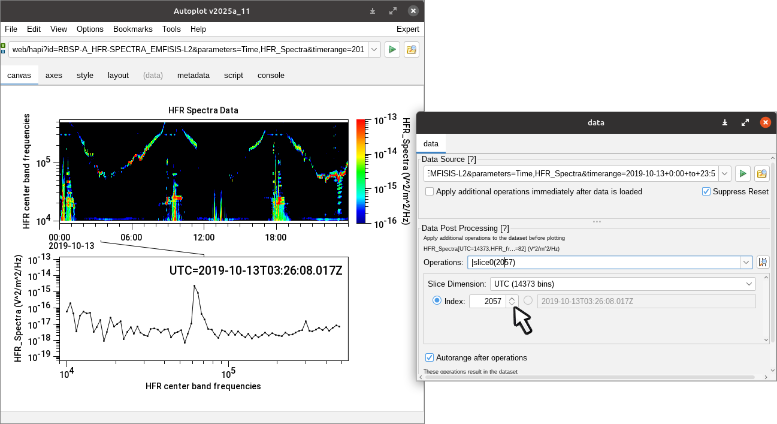

Autoplot Application (#{tag})
Single-Jar : .jar files can be launched on Windows and Mac, and contain a shell script for launching on Unix computers.
dmg: a self-contained installer for Mac computers.
exe: a self-contained installer for Windows computers.
Built with Install4J multi-platform installer builder and
deb and
rpm are available as well. Thanks, Install4J!

NumPy npy and npz files are now supported. Here the binary reader with digital renderer is useful in decoding them.
Autoplot allows plotting of data from many data sources, including remote CDF files and HAPI servers.
Datasets are identified with URIs, and by the URI's extension, data are loaded into one uniform data model. Data are
then displayed by determining the rendering method and axis ranges to provide a useful display with interactive axes and
mouse actions. The data can then be further processed with other operations like smooth and FFT, and Jython scripting
provides a capable programming environment.
This is the Autoplot v2025a branch. This is an update to the production version containing bugfixes and minor new features.
Java 8 is required.
To run on 32-bit systems, use the single-jar release and a 32-bit version of Java.
Bugfixes (2025-08-29):
- 0142: Use the correct name at GitHub for the Juno orbits file, to avoid using the alias "meta". Thanks, Bill!
- 2736: IDL unsigned longs (32 bit) and unsigned ints (16 bit) are now supported when reading in IDLSave files. Thanks, Lily!
- Tweaks to the ASCII parser which allow Juno shocks file with colors to be used. (FF for alpha would cause color parsing to fail, now named colors and 0xFF0000FF can be used.)
- 2735: Runtime errors are routed to Jeremy and Chris' (for Das2Server issues) email again.
- 2734: events lists with alpha component load properly again.
- 2704: set the pick vap location appropriately for local .vap files.
- 2728: Reduce the number of places where old ScriptContext.getViewWindow is still used.
- 2731: Replace File dialog uses DataSetSelector to provide completions and recent entries. Thanks, Ivar!
- 2730: Events list URI bar doesn't remember recent entries. Thanks, Ivar!
- 141: properly use credentials using http hostname and realm.
- 2729: ASCII editor GUI didn't properly handle "fill" setting.
- 2727: bug where setApplication() was used to make a slice window, but plot command didn't use the right application for auto ranging.
- 2725: don't hard-code units in CDF labels, instead use template %{UNITS}.
- 2724: show "file not found" dialog with bad Jython script name.
- Clean up tooltip on "play" button, which incorrectly says Alt+Play did something.
- clean up generate floats GUI in run batch tool.
- Missing file from remote directory ending in /tmp/ would cause stack overflow.
Older Bugfixes (2025-08-01):
- 140: step/scan buttons would always scan to skip an interval for non-time-location xtags.
- When the fftPower window length is greater than the data window length, automatically flatten the data (a O(1) operation) to provide result. Thanks, George!
- 139: anchorType plot means follow the plot and use its row and column.
- 139: Annotation with anchorType plot should not clip when anchorPosition is outside of the box.
- GrannyTextEditor properly replaces an extension when the carot is immediately before an extension.
- 138: Spectrogram flipped flag wasn't considered when comparing to sampleWidths in NN interpolation.
- getGetParams didn't properly handle the min and max constraints, dropping them in the generation GUI of run batch
- don't assume cadenceExact is valid when histogram mode is used, it would show incorrect horizontal lines. Thanks, Dave!
- getRecent corrected in Run Batch Tool.
- detect 0 by 0 pixel plot during transitions which would mess up layout, causing noise in tests.
- ScriptContext's write to png make directory is thread-safe so multiple threads don't step on each other.
- Add string describing how axis tick format dialog is used.
- CDF with NRV variable, and no DEPEND_0 caused runtime error because it was incorrectly handled. Thanks, Chris!
- 849: don't assume all Jython variables have __doc__, which broke completions on S*.
- 2721: Bug where default canvas size affected loading of .vap files when running in the background.
- 136: toTimeDataSet didn't allow rank 0 year, month, day, hour, minute, second, and rank 1 nanosecond. Thanks, Andrei!
- 2272: clean up release script, removing jnlp stuff and reducing build time.
- URL to example image in GrannyTextEditor is corrected.
Features:
- HAPI URI editor panel displays the dataset titles if available, so that search is less opaque.
- 853: Support for npz and npy files.
- 851: tickFormat works property for x-axis time tags. Thanks Megha!
- DatumVector is now iterable, to clean up some scripts. Do some bounds checking.
Less recent features:
- Use "format" constraint when generating timeranges in Run Batch Tool.
- Use "min" and "max" constraint when generating timeranges in Run Batch Tool.
- synchronizeOne allows two datasets with the same length and no timetags (DEPEND_0).
- Run Batch Tool has button to delete the png files directory.
- "String Scheme" editors for URIs, layout, and fonts now have label so they are identified in Tooltips.
- DOM and .vaps have new property "tickFormat". Work towards allowing mission elapsed time to be shown as well times for axis ticks. Thanks, Megha!
- Annotation Editor shows the anchorBorderType and fontSize.
- Move Annotation mouse action shows anchor position.
Feedback on the function and quality of this release is greatly appreciated!
Data is input from:
- ASCII files (.dat,.txt)
- CSV files (.csv)
- Binary files (.bin)
- CDF files(.cdf)
- PDS4 files (.lblx)
- PDS3 files (.lbl)
- Excel spread sheets (.xls)
- das2Streams (.d2s or .das2Stream)
- HAPI Servers (vap+hapi:)
- CDAWeb data server (vap+cdaweb:)
- das2servers (vap+das2server:)
- QStreams (.qds) (serialized version of internal model QDataSet)
- Plasma Wave Group das2 Server
- NetCDF files (.nc,.ncml)
- HDF5 files (.h5,.hdf5)
- DODs servers (.dds)
- Cluster Exchange Format files (.cef)
- Fits Format Files (.fits)
- Images (.jpg, .png, .gif)
- Wav audio files (.wav)
- ODL files (.sts)
autoplot.org is the website containing
more information than this launch page.